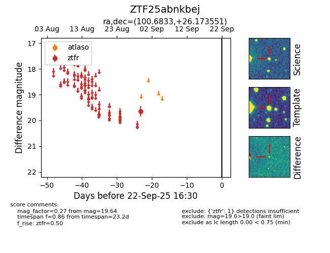

FINK: ZTF25abnkbej
Lasair: ZTF25abnkbej
ALeRCE: ZTF25abnkbej
ZTF25abnkbej (ztf,fink)
equatorial (ra, dec) = (100.6833,+26.17355)
galactic (l, b) = (188.4635,+9.83442)

last ztfr=19.64
1 ztfr detections